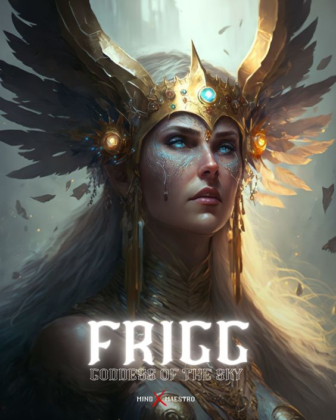

Mitologia Nordica
Cada lugar tiene sus creencias hechas a medida, adaptadas a sus particularidades y a la forma de ser de sus gentes. La mitología nórdica, como las demás que existieron en el mundo, se compone de leyendas que narran grandes hazañas de dioses y héroes. Politeísta, como la mayoría de religiones y creencias antiguas, encuentra numerosos puntos en común con los mitos grecolatinos pero con versiones muy distintas. El mundo en el que Odín gobernó, Thor hizo resonar su trueno y Loki usó sus poderes de engaño sigue estando muy vivo. Los dioses de Asgard, así como el resto de criaturas que poblaban los Nueve Reinos, eran la interpretación de los pueblos del norte de Europa a las tierras que ocupaban y a sus actos. La geografía de los países escandinavos había sido causada, obviamente, por el martillo del dios Thor y los fiordos no podían ser otra cosa que la entrada a la guarida de los trolls. Los pueblos vikingos dieron vida a un panteón completo de dioses que justificaban tanto el duro clima al que debían hacer frente como su forma de vida caracterizada por el ardor guerrero y por ello es interesante conocerla, ya que además de fascinante es una forma de comprender la mentalidad de esta cultura.
★━━ principales dioses ━━★
Odin
Su nombre significa furor y es el dios más importante de la mitología nórdica, siendo el rey de los Dioses. Hijo del dios Bor y de la gigante Bestla, hermano de Vili y Vé, domina la guerra, la muerte, la sabiduría, la poesía y la magia. Odin es, según las leyendas, el padre los dos primeros humanos: Ask y Embla. Entre todos sus poderes, se reconoce a Odín como el espíritu de la superación personal, por los grandes retos que tuvo que superar para ser considerado un dios, el reto mas grande fue cuando sacrificó su ojo derecho cuando fue incentivado a beber del manantial de Mimir, donde se encontraba la sabiduría, lo que lo elevó a ser el dios más sabio, dueño de todo el conocimiento universal.
Frigg
Esposa de Odín, diosa del cielo y reina de los Aesir, está asociada a la fertilidad femenina, el amor, el hogar y el matrimonio, la maternidad y las tareas domésticas, así como con la sabiduría y la previsión. Es la única capaz de sentarse en el trono celestial junto a su esposo.
Njord
Njord era una deidad pacífica y más arraigada a la naturaleza que a la actividad humana. En concreto hablamos del dios del mar, lo que incluye la pesca o la navegación, así como de la tierra fértil. Se le invocaba para aplacar tormentas y para tener suerte en la pesca, en los viajes marítimos o en los negocios en general. No tenemos mucha información sobre el dios Njord pero sabemos que un pueblo tan marinero como el vikingo le rendía mucho culto
Heimdall
Dios guardián del Bifrost, puente entre el mundo de los mortales y el de los dioses, era hijo de Odín y de nueve mujeres gigantes que lo criaron tomando sangre de jabalí. De aguda visión y audición, podía estar sin dormir varios días y soplando su cuerno anunciará la venidera guerra entre gigantes y dioses, preludio al fin del mundo.
Balder
Dios de la paz, el perdón y la luz, es el segundo hijo de Odín, también es llamado Baldur o Balder. Murió a manos de su hermano ciego, Hödr, tras ser manipulado por Loki.
Ymir
Ymir, en la mitología nórdica es el primer ser que apareció en el mito de la creación nórdica. Es el antepasado de los gigantes, existió antes que los dioses Aesir, en una época donde todo estaba hecho de hielo y nieve. Se dice que su muerte llevó a la creación de la Tierra (Midgard) y los humanos.
Freyja
Vanir hermana de Frey, diosa del amor, la seducción y la belleza, así como de la fertilidad femenina, invocada para tener buen resultado en los partos y en las cosechas. Junto a Frigg fue la diosa más venerada de la religión nórdica, aunque también estaba asociada a ciertos aspectos de la guerra, la muerte, la magia y la riqueza.
Loki
Hijo de los gigantes Farbauti y Laufey, es una figura misteriosa del panteón nórdico, dios del engaño y la manipulación, que los Aesir ataron a tres rocas como castigo. No era una deidad venerada por los nórdicos, sino que era una deidad menor dotada de muchos apodos (kenningar), considerada una especie de embaucador entre los dioses, que a menudo los ponía en aprietos.
Thor

Dios del trueno y de la fuerza, vinculado con el éxito de las cosechas y, naturalmente, con la justicia y la batalla, empleaba un gran martillo llamado Mjolnir para abrirse paso entre los gigantes. Era hijo de Odín y de la diosa Jotun, que personificaba la tierra.
Freyr
Vanir hermano de Freya, es el señor de la vegetación, la lluvia, el sol saliente y la fertilidad masculina. Es uno de los dioses más importantes del paganismo nórdico, y el dios favorito de los elfos, representado a menudo mediante símbolos fálicos.
Tyr
Dios de la guerra nórdico, representado como un hombre de una sola mano, es hijo de Odín y Frigg, en algunas versiones, y de Ymir y la gigante Frilla, en otras. Su mano faltante fue devorada por Fenrir, un mítico lobo gigante, y junto a Odín se le considera una de las figuras de autoridad del panteón nórdico.
Hela
Diosa y reina de Helheim, hija de Loki y de la gigante Angrboda, es representada como una mujer hermosa de un lado y cadavérica y putrefacta por el otro, dado que así es la visión sobre la muerte de los seres humanos.
★━━ historias ━━★
Los nueve mundos
Los relatos de la mitología nórdica reflejan una visión fundamentalmente guerrerista y panteísta del mundo, en la que conviven nueve mundos primigenios conectados a través de las ramas del árbol del mundo, Yggdrasil, y en los que habitaban seres distintos y de diferente naturaleza. Esos nueve mundos eran:
- Midgard, el mundo de los seres humanos, que ocupaba el centro del universo conocido (de allí su nombre: mid, “medio”, gärd, “campo de cultivo”). También se la conocía como la Tierra Media.
- Asgard, el mundo de los dioses, conocidos como Aesir, en cuyo corazón se halla el Valhalla, más o menos equivalente al paraíso cristiano, aunque destinado únicamente a los guerreros muertos en combate glorioso.
- Jötunheim, el mundo de los gigantes (jötnar) de hielo y de roca, seres primitivos más o menos equivalentes a los titanes de la tradición grecorromana. Se hallaba separado de Asgard por el río Iving.
- Niflheim, el mundo de la oscuridad y la niebla perpetua, hogar del dragón Nidhöggr, que roe sin cesar las raíces del árbol del mundo.
- Helheim, el mundo de los muertos, que existe en la región más fría y oscura de las profundidades de Niflheim, y es gobernado por Hela, diosa de la muerte. Estaba rodeado infinitamente por el río Gjöll, y quienes entraban en él nunca más salían, como eran los fallecidos por enfermedad, vejez o los criminales que requerían castigo.
- Muspelheim, el mundo del fuego, hogar de los gigantes de fuego, era el más elevado de todos los reinos, ubicado por encima de Asgard y en contraposición a Niflheim.
- Alfheim, el mundo de los elfos, seres etéreos que libraban una constante guerra entre sus dos facciones: los elfos luminosos (Ljósálfar) y los elfos oscuros (Svártálfar), ambas emparentadas consanguineamente, pero con objetivos distintos.
- Svartálfaheim, el mundo de los elfos oscuros, habitantes de las montañas, y posiblemente de los enanos nórdicos también.
- Vanaheim, el mundo de los Vanir, el segundo clan de dioses diferente de los Aesir, con quienes se enfrentaron en una guerra ancestral. A diferencia de los dioses guerreros de Asgard, estos son deidades vinculadas con la tierra, la fertilidad, la prosperidad y con el mar.
Ragnarok
En la mitología nórdica, Ragnarök es la batalla del fin del mundo. Esta batalla será emprendida entre los dioses, los Æsir y los einherjar, liderados por Odín y los gigantes de fuego liderados por Surt, a los cuales también se les unen los jotun liderados por Loki. No solo los dioses, los gigantes y los monstruos perecerán en esta conflagración, sino que prácticamente todo en el universo será destruido. Lo que es único sobre el Ragnarök como historia apocalíptica (en el estilo Armagedón) es que los dioses ya saben a través de la profecía lo que va a suceder: qué avisará de la llegada del acontecimiento, quién será asesinado por quién, y así sucesivamente. Incluso saben que ellos no tienen el poder de evitar el Ragnarök. Esto está relacionado con el concepto de destino de los pueblos nórdicos antiguos.
el martillo Mjölnir
Mjölnir es el arma más temible del arsenal de los dioses y es usado para eliminar a cualquiera que intente socavar la supremacía de los Æsir. Es mencionado como un garrote, un hacha y un martillo. Mjölnir poseía muchas características mágicas, como la de poder golpear tan fuerte como Thor quisiera, desde un leve toque hasta un terrible golpe que destruiría montañas. También se decía que el trueno y el rayo eran consecuencia del golpe del martillo y que el martillo contaba con la capacidad de encogerse lo suficiente como para ser guardado en una túnica y luego agrandarse para ser usado en combate.